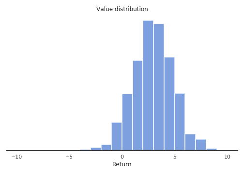
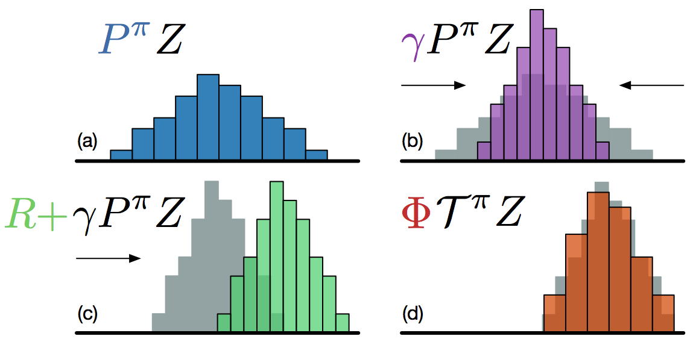
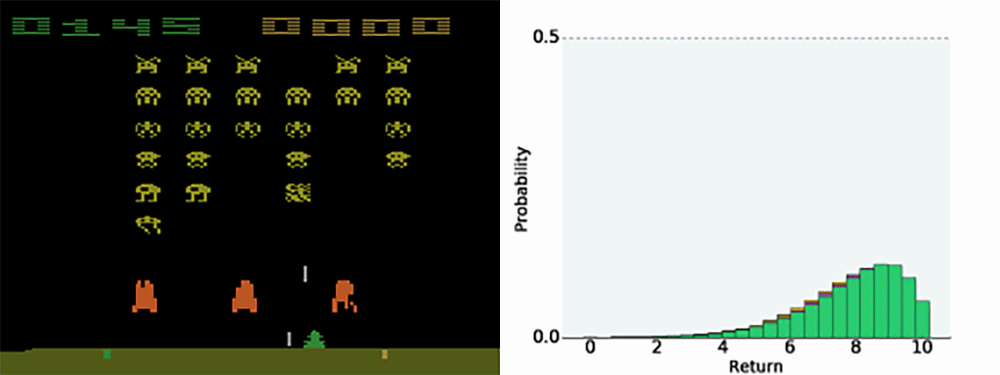
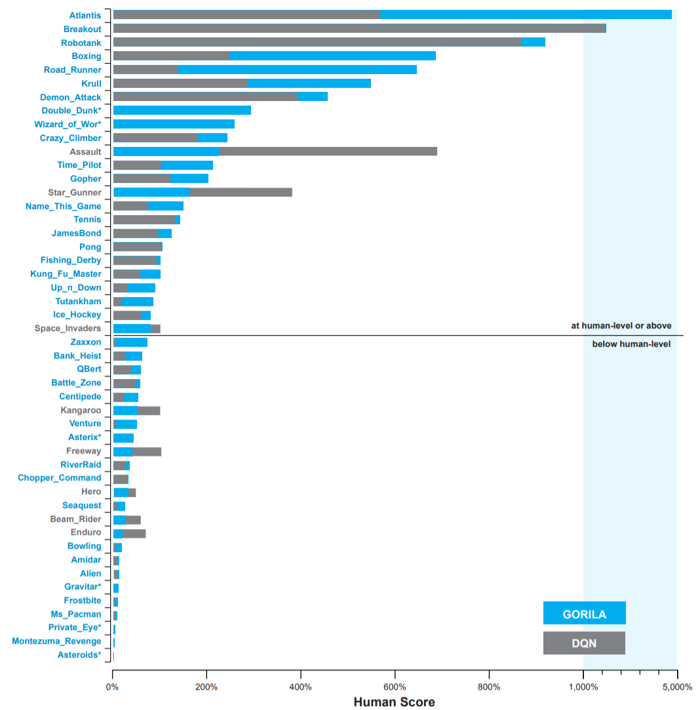
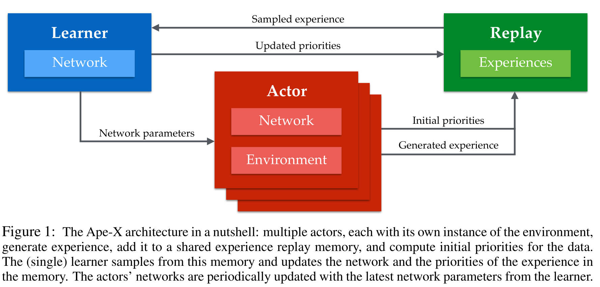
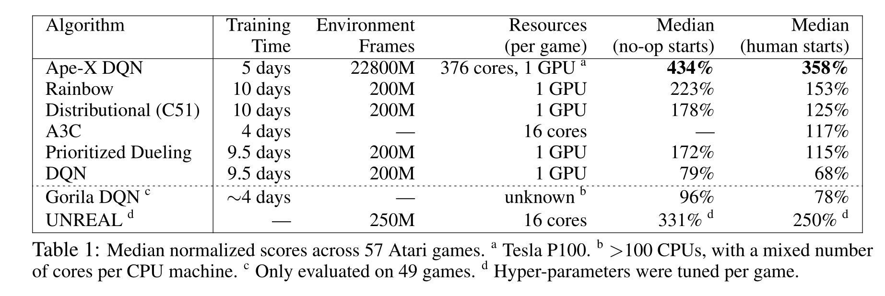
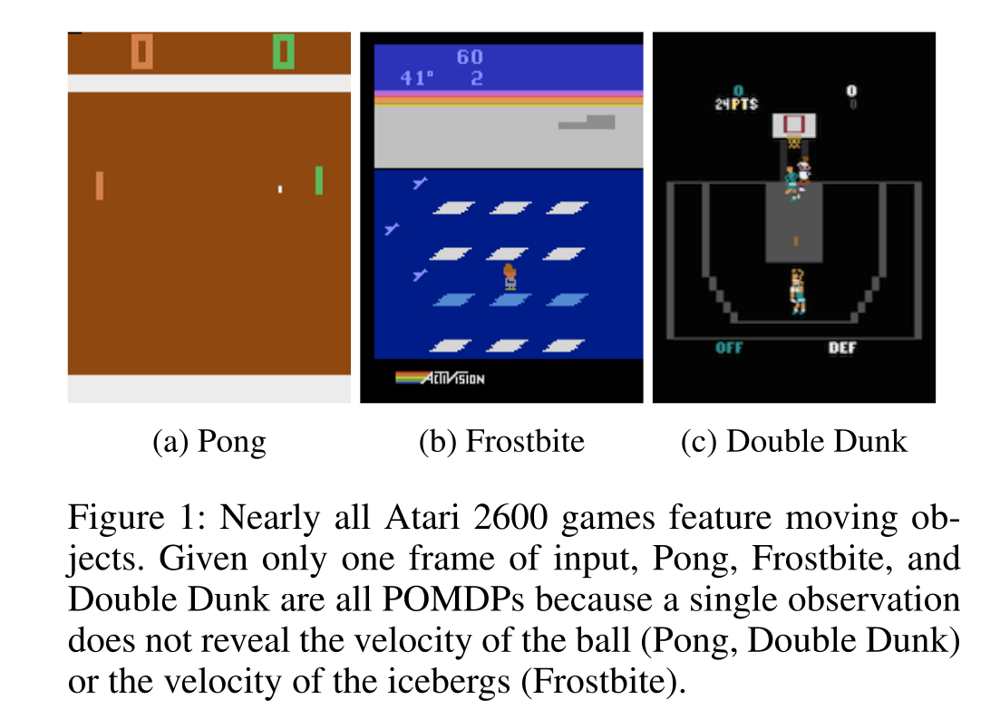
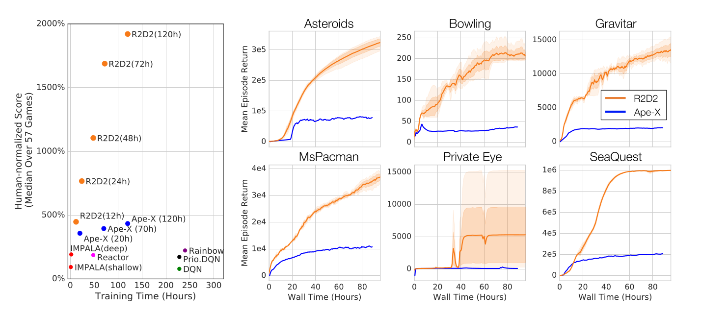

Beyond DQN
Distributional learning : Categorical DQN
Why learning distributions of returns?
Until now, we have only cared about the expectation of the returns, i.e. their mean value:
V^\pi(s) = \mathbb{E}_\pi [R_t | s_t = s]
Q^\pi(s, a) = \mathbb{E}_\pi [R_t | s_t = s, a_t = a]
We select actions with the highest expected return, which makes sense on the long term.
Suppose we have two actions a_1 and a_2, which provide different returns with the same probability:
- R(a_1) = \{100, 200\}
- R(a_2) = \{-100, 400\}
Their Q-value is the same: Q(a_1) = Q(a_2) = 150, so if you play them an infinity of times, they are both optimal. But suppose that, after learning, you can only try a single action. Which one do you chose? RL does not distinguish safe from risky actions.
Categorical learning
The idea of distributional RL is to learn the distribution of returns \mathcal{Z}^\pi directly instead of its expectation:
R_t \sim \mathcal{Z}^\pi(s_t, a_t)

Note that we can always obtain the Q-values back:
Q^\pi(s, a) = \mathbb{E}_\pi [\mathcal{Z}^\pi(s, a)]
In categorical DQN (Bellemare et al., 2017), they model the distribution of returns as a discrete probability distribution: the categorical or multinouilli distribution. One first needs to identify the minimum and maximum returns R_\text{min} and R_\text{max} possible in the problem. One then splits the range [R_\text{min}, R_\text{max}] in n discrete bins centered on the atoms \{z_i\}_{i=1}^N.
The probability that the return obtained the action (s, a) lies in the bin of the atom z_i is noted p_i(s, a). It can be approximated by a neural network F with parameters \theta, using a softmax output layer:
p_i(s, a; \theta) = \frac{\exp F_i(s, a; \theta)}{\sum_{j=1}^{n} \exp F_j(s, a; \theta)}
The n probabilities \{p_i(s, a; \theta)\}_{i=1}^N completely define the parameterized distribution \mathcal{Z}_\theta(s, a).
\mathcal{Z}_\theta(s, a) = \sum_a p_i(s, a; \theta) \,\delta_{z_i}
where \delta_{z_i}is a Dirac distribution centered on the atom z_i. The Q-value of an action can be obtained by:
Q_\theta(s, a) = \mathbb{E} [\mathcal{Z}_\theta(s, a)] = \sum_{i=1}^{n} p_i(s, a; \theta) \, z_i

The only thing we need is a neural network \theta returning for each action a in the state s a discrete probability distribution \mathcal{Z}_\theta(s, a) instead of a single Q-value Q_\theta(s, a). The NN uses a softmax activation function for each action. Action selection is similar to DQN: we first compute the Q_\theta(s, a) and apply greedy / \epsilon-greedy / softmax over the actions.
Q_\theta(s, a) = \sum_{i=1}^{n} p_i(s, a; \theta) \, z_i
The number n of atoms for each action should be big enough to represent the range of returns. A number that works well with Atari games is n=51: Categorical DQN is often noted C51.
Distributional Bellman target
How do we learn the distribution of returns \mathcal{Z}_\theta(s, a) of parameters \{p_i(s, a; \theta)\}_{i=1}^N? In Q-learning, we minimize the mse between the prediction Q_\theta(s, a) and the target:
\mathcal{T} \, Q_\theta(s, a) = r + \gamma \, Q_\theta(s', a')
where \mathcal{T} is the Bellman operator.
\min_\theta (\mathcal{T} \, Q_\theta(s, a) - Q_\theta(s, a))^2
We do the same here: we apply the Bellman operator on the distribution \mathcal{Z}_\theta(s, a).
\mathcal{T} \, \mathcal{Z}_\theta(s, a) = r(s, a) + \gamma \, \mathcal{Z}_\theta(s', a')
We then minimize the statistical “distance” between the distributions \mathcal{Z}_\theta(s, a) and \mathcal{T} \, \mathcal{Z}_\theta(s, a).
\min_\theta \text{KL}(\mathcal{T} \, \mathcal{Z}_\theta(s, a) || \mathcal{Z}_\theta(s, a))
Let’s note P^\pi \, \mathcal{Z} the return distribution of the greedy action in the next state \mathcal{Z}_\theta(s', a').
Multiplying the returns by the discount factor \gamma < 1 shrinks the return distribution (its support gets smaller). The atoms z_i of \mathcal{Z}_\theta(s', a') now have the position \gamma \, z_i, but the probabilities stay the same.

Adding a reward r translates the distribution. The probabilities do not change, but the new position of the atoms is:
z'_i = r + \gamma \, z_i

But now we have a problem: the atoms z'_i of \mathcal{T} \, \mathcal{Z}_\theta(s, a) do not match with the atoms z_i of \mathcal{Z}_\theta(s, a). We need to interpolate the target distribution to compare it with the predicted distribution.
We need to apply a projection \Phi so that the bins of \mathcal{T} \, \mathcal{Z}_\theta(s, a) are the same as the ones of \mathcal{Z}_\theta(s, a). The formula sounds complicated, but it is basically a linear interpolation:
(\Phi \, \mathcal{T} \, \mathcal{Z}_\theta(s, a))_i = \sum_{j=1}^n \big [1 - \frac{| [\mathcal{T}\, z_j]_{R_\text{min}}^{R_\text{max}} - z_i|}{\Delta z} \big ]_0^1 \, p_j (s', a'; \theta)

We now have two distributions \mathcal{Z}_\theta(s, a) and \Phi \, \mathcal{T} \, \mathcal{Z}_\theta(s, a) sharing the same support. We now want to have the prediction \mathcal{Z}_\theta(s, a) close from the target \Phi \, \mathcal{T} \, \mathcal{Z}_\theta(s, a). These are probability distributions, not numbers, so we cannot use the mse. We instead minimize the Kullback-Leibler (KL) divergence between the two distributions.
Categorical DQN
The categorical DQN algorithm follows the main lines of DQN, with the additional step of prohecting the distributions:
In practice, the computation of the cross-entropy loss is described in (Bellemare et al., 2017):

Having the full distribution of returns allow to deal with uncertainty. For certain actions in critical states, one could get a high return (killing an enemy) or no return (death). The distribution reflects that the agent is not certain of the goodness of the action. Expectations would not provide this information.



Other variants of distributional learning include:
- QR-DQN Distributional Reinforcement Learning with Quantile Regression (Dabney et al., 2017).
- IQN Implicit Quantile Networks for Distributional Reinforcement Learning (Dabney et al., 2018).
- The Reactor: A fast and sample-efficient Actor-Critic agent for Reinforcement Learning (Gruslys et al., 2017).
Noisy DQN
DQN and its variants rely on \epsilon-greedy action selection over the Q-values to explore. The exploration parameter \epsilon is annealed during training to reach a final minimal value. It is preferred to softmax action selection, where \tau scales with the unknown Q-values. The problem is that it is a global exploration mechanism: well-learned states do not need as much exploration as poorly explored ones.

{kind=link}
\epsilon-greedy and softmax add exploratory noise to the output of DQN: The Q-values predict a greedy action, but another action is taken. What about adding noise to the parameters (weights and biases) of the DQN, what would change the greedy action everytime? Controlling the level of noise inside the neural network indirectly controls the exploration level.

Parameter noise builds on the idea of Bayesian deep learning. Instead of learning a single value of the parameters:
y = \theta_1 \, x + \theta_0
we learn the distribution of the parameters, for example by assuming they come from a normal distribution:
\theta \sim \mathcal{N}(\mu_\theta, \sigma_\theta^2)
For each new input, we sample a value for the parameter:
\theta = \mu_\theta + \sigma_\theta \, \epsilon
with \epsilon \sim \mathcal{N}(0, 1) a random variable. The prediction y will vary for the same input depending on the variances:
y = (\mu_{\theta_1} + \sigma_{\theta_1} \, \epsilon_1) \, x + \mu_{\theta_0} + \sigma_{\theta_0} \, \epsilon_0
The mean and variance of each parameter can be learned through backpropagation!

As the random variables \epsilon_i \sim \mathcal{N}(0, 1) are not correlated with anything, the variances \sigma_\theta^2 should decay to 0. The variances \sigma_\theta^2 represent the uncertainty about the prediction y.
Applied to DQN, this means that a state which has not been visited very often will have a high uncertainty: The predicted Q-values will change a lot between two evaluations, so the greedy action might change: exploration. Conversely, a well-explored state will have a low uncertainty: The greedy action stays the same: exploitation.
Noisy DQN (Fortunato et al., 2017) uses greedy action selection over noisy Q-values. The level of exploration is learned by the network on a per-state basis. No need for scheduling! Parameter noise improves the performance of \epsilon-greedy-based methods, including DQN, dueling DQN, A3C, DDPG (see later), etc.

Rainbow network
We have seen various improvements over a few years (2013-2017):
- Original DQN (Mnih et al., 2013)
\mathcal{L}(\theta) = \mathbb{E}_\mathcal{D} [(r + \gamma \, Q_{\theta'}(s´, \text{argmax}_{a'} Q_{\theta'}(s', a')) - Q_\theta(s, a))^2]
- Double DQN (van Hasselt et al., 2015)
\mathcal{L}(\theta) = \mathbb{E}_\mathcal{D} [(r + \gamma \, Q_{\theta'}(s´, \text{argmax}_{a'} Q_{\theta}(s', a')) - Q_\theta(s, a))^2]
- Prioritized Experience Replay (Schaul et al., 2015)
P(k) = \frac{(|\delta_k| + \epsilon)^\alpha}{\sum_k (|\delta_k| + \epsilon)^\alpha}
- Dueling DQN (Wang et al., 2016)
Q_\theta(s, a) = V_\alpha(s) + A_\beta(s, a)
- Categorical DQN (Bellemare et al., 2017)
\mathcal{L}(\theta) = \mathbb{E}_{\mathcal{D}_s}[ - \mathbf{t}_k \, \log Z_\theta(s_k, a_k)]
- NoisyNet (Fortunato et al., 2017)
\theta = \mu_\theta + \sigma_\theta \, \epsilon
Which of these improvements should we use?

Answer: all of them. The rainbow network (Hessel et al., 2017) combines :
- double dueling DQN with PER.
- categorical learning of return distributions.
- parameter noise for exploration.
- n-step return (n=3) for the bias/variance trade-off:
R_t = \sum_{k=0}^{n-1} \gamma^k \, r_{t+k+1} + \gamma^n \max_a Q(s_{t+n}, a)
and outperforms any of the single improvements.

Most of these mechanisms are necessary to achieve optimal performance (ablation studies). n-step returns, PER and distributional learning are the most critical. Interestingly, double Q-learning does not have a huge effect on the Rainbow network: The other mechanisms (especially distributional learning) already ensure that Q-values are not over-estimated.
You can find good implementations of Rainbow DQN on all major frameworks, for example on rllib:
https://docs.ray.io/en/latest/rllib-algorithms.html#deep-q-networks-dqn-rainbow-parametric-dqn
Distributed learning
Gorila - General Reinforcement Learning Architecture
The DQN value network Q_\theta(s, a) has two jobs:
- actor: it interacts with the environment to sample (s, a, r, s') transitions.
- learner: it learns from minibatches out of the replay memory.

The weights of the value network lie on the same CPU/GPU, so the two jobs have to be done sequentially: computational bottleneck. DQN cannot benefit from parallel computing: multi-core CPU, clusters of CPU/GPU, etc.
The Gorila framework (Nair et al., 2015) splits DQN into multiple actors and multiple learners. Each actor (or worker) interacts with its copy of the environment and stores transitions in a distributed replay buffer. Each learner samples minibatches from the replay buffer and computes gradients w.r.t the DQN loss. The parameter server (master network) applies the gradients on the parameters and frequently synchronizes the actors and learners.

Gorila allows to train DQN on parallel hardware (e.g. clusters of GPU) as long as the environment can be copied (simulation).

The final performance is not incredibly better than single-GPU DQN, but obtained much faster in wall-clock time (2 days instead of 12-14 days on a single GPU).

Ape-X
With more experience, Deepmind realized that a single learner is better. Distributed SGD (computing gradients with different learners) is not very efficient. What matters is collecting transitions very quickly (multiple workers) but using prioritized experience replay to learn from the most interesting ones.

Using 360 workers (1 per CPU core), Ape-X (Horgan et al., 2018) reaches super-human performance for a fraction of the wall-clock training time.

The multiple parallel workers can collect much more frames, leading to the better performance. The learner uses n-step returns and the double dueling DQN network architecture, so it is not much different from Rainbow DQN internally.

Recurrent DQN
DRQN: Deep Recurrent Q-network
Atari games are POMDP: each frame is a partial observation, not a Markov state. One cannot infer the velocity of the ball from a single frame.

The trick used by DQN and its variants is to stack the last four frames and provide them as inputs to the CNN. The last 4 frames have (almost) the Markov property.
The alternative is to use a recurrent neural network (e.g. LSTM) to encode the history of single frames.
\mathbf{h}_t = f(W_x \times \mathbf{x}_t + W_h \times \mathbf{h}_{t-1} + \mathbf{b})
The output at time t depends on the whole history of inputs (\mathbf{x}_0, \mathbf{x}_1, \ldots, \mathbf{x}_t).
Using the output of a LSTM as a state, we make sure that we have the Markov property, RL will work:
P(\mathbf{h}_{t+1} | \mathbf{h}_t) = P(\mathbf{h}_{t+1} | \mathbf{h}_t, \mathbf{h}_{t-1}, \ldots, \mathbf{h}_0)

For the neural network, it is just a matter of adding a LSTM layer before the output layer. The convolutional layers are feature extractors for the LSTM layer. The loss function does not change: backpropagation (through time) all along.
\mathcal{L}(\theta) = \mathbb{E}_\mathcal{D} [(r + \gamma \, Q_{\theta'}(s´, \text{argmax}_{a'} Q_{\theta}(s', a')) - Q_\theta(s, a))^2]

The only problem is that RNNs are trained using truncated backpropagation through time (BPTT). One needs to provide a partial history of T = 10 inputs to the network in order to learn one output:
(\mathbf{x}_{t-T}, \mathbf{x}_{t-T+1}, \ldots, \mathbf{x}_t)
The experience replay memory should therefore not contain single transitions (s_t, a_t, r_{t+1}, s_{t+1}), but a partial history of transitions.
(s_{t-T}, a_{t-T}, r_{t-T+1}, s_{t-T+1}, \ldots, s_t, a_t, r_{t+1}, s_{t+1})
Using a LSTM layer helps on certain games, where temporal dependencies are longer that 4 frames, but impairs on others.

Beware: LSTMs are extremely slow to train (but not to use). Stacking frames is still a reasonable option in many cases.

R2D2: Recurrent Replay Distributed DQN
R2D2 (Kapturowski et al., 2019) builds on Ape-X and DRQN:
- double dueling DQN with n-step returns (n=5) and prioritized experience replay.
- 256 actors, 1 learner.
- 1 LSTM layer after the convolutional stack.
In addition to solving practical problems with LSTMs (initial state at the beginning of an episode), it became the state of the art on Atari-57 until November 2019…
